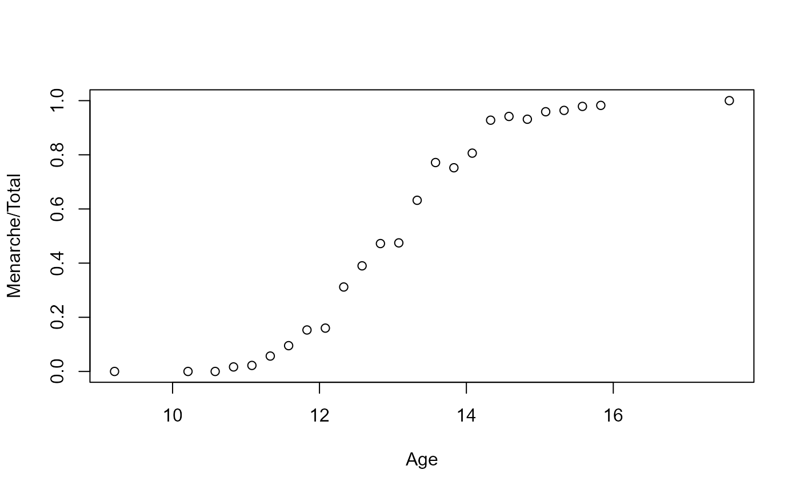

EnvelopeBuild.RdBuilds an Enveloping function for simulation using a grid and tangencies for the posterior density
EnvelopeBuild(
bStar,
A,
y,
x,
mu,
P,
alpha,
wt,
family = "binomial",
link = "logit",
Gridtype = 2L,
n = 1L,
sortgrid = FALSE
)Point at which envelope should be centered (typically posterior mode
Diagonal precision matrix for log-likelihood function associated with model in standard form
a vector of observations of length m
a design matrix of dimension m * p
a vector giving the prior means of the variables
a positive-definite symmetric matrix specifying the prior precision matrix of the variables
offset vector
a vector of weights
Family for the envelope. Can take on values binomial, quasibinomial, poisson, quasibinomial, and Gamma
Link function for the envelope. Valid links for the binomial and quasibinomial families are logit, probit, and cloglog. The valid value for the poisson, quasipoisson, and the Gamma families is the log
an optional argument specifying the method used to determine number of likelihood subgradient densities used to construct the enveloping function
number of draws to generate from posterior density. Used here to help determine the size of the grid (Gridtype 1 and 2 only)
an optional Logical argument determining whether the final envelope should be sorted in descending order based on probability for each part of the envelope
The function returns a list consisting of the following components ( the first six of which are matrices with the number of rows equal to the number of components in the Grid and columns equal to the number of parameters):
A matrix containing information on how each dimension should be sampled (1 means left tail of a restricted normal, 2 center, 3 right tail, and 4 the entire line)
A matrix containing the points of tangencies associated with each component of the grid
A matrix containing the gradients for the negative log-likelihood at each tangency
A matrix containing the log of the cummulative probability associated with each dimension
A matrix containing the log of the probability associated with the right tail (i.e. that to the right of the lower bound)
A matrix containing the log of the probability associated with the left tail (i.e., that to the left of the upper bound)
A vector containing constant for each component of the grid used during the accept-reject procedure
A matrix containing log-probabilities related to the components of the grid
A vector containing the probability of each component in the Grid
To construct an enveloping function, we follow the approach in Nygren and Nygren (2006) which involves the following steps when a maximally sized grid is constructed (if the prior for some dimensions is relatively strong, this may not be needed)
1) For each dimension, a constant omega_i is found that depends on the
corresponding diagonal element in the precision matrix.
2) Corresponding intervals (thetastar_i-0.5 *omega,thetastar_i-0.5 *omega)
are constructed around the posterior mode thetastar for each dimension
3) The mode as well as the points thetastar_i-omega_i and thetastar_i+omega_i
are selected as the components of the points at which tangencies will be found for each of
the dimensions.
4) A Grid is constructed with all possible combinations of points and negative log-likelihood and gradient for the negative log-likelihood are evaluated (see the EnvelopeBuild_c.cpp function source code for details)
5) The Set_Grid function is called in order to evaluate the log of the density associated
with each of the resulting restricted multivariate normals by evaluating the differences between the cummulative
density for each dimension between its lower and upper bound.
6) The Set_LogP is called in order to help set the probabilities with which each of the components of the grid should be sampled (see remark 6 in Nygren and Nygren (2006)).
Any constants needed by the sampling are added to a list and returned by the function.
data(menarche2)
summary(menarche2)
#> Age Total Menarche
#> Min. : 9.21 Min. : 88.0 Min. : 0.00
#> 1st Qu.:11.58 1st Qu.: 98.0 1st Qu.: 10.00
#> Median :13.08 Median : 105.0 Median : 51.00
#> Mean :13.10 Mean : 156.7 Mean : 92.32
#> 3rd Qu.:14.58 3rd Qu.: 117.0 3rd Qu.: 92.00
#> Max. :17.58 Max. :1049.0 Max. :1049.00
plot(Menarche/Total ~ Age, data=menarche2)

Age2=menarche2$Age-13
x<-matrix(as.numeric(1.0),nrow=length(Age2),ncol=2)
x[,2]=Age2
y=menarche2$Menarche/menarche2$Total
wt=menarche2$Total
mu<-matrix(as.numeric(0.0),nrow=2,ncol=1)
mu[2,1]=(log(0.9/0.1)-log(0.5/0.5))/3
V1<-1*diag(as.numeric(2.0))
# 2 standard deviations for prior estimate at age 13 between 0.1 and 0.9
## Specifies uncertainty around the point estimates
V1[1,1]<-((log(0.9/0.1)-log(0.5/0.5))/2)^2
V1[2,2]=(3*mu[2,1]/2)^2 # Allows slope to be up to 1 times as large as point estimate
famfunc<-glmbfamfunc(binomial(logit))
f1<-famfunc$f1
f2<-famfunc$f2
f3<-famfunc$f3
f5<-famfunc$f5
f6<-famfunc$f6
dispersion2<-as.numeric(1.0)
start <- mu
offset2=rep(as.numeric(0.0),length(y))
P=solve(V1)
n=1000
###### Adjust weight for dispersion
wt2=wt/dispersion2
######################### Shift mean vector to offset so that adjusted model has 0 mean
alpha=x%*%as.vector(mu)+offset2
mu2=0*as.vector(mu)
P2=P
x2=x
##### Optimization step to find posterior mode and associated Precision
parin=start-mu
opt_out=optim(parin,f2,f3,y=as.vector(y),x=as.matrix(x),mu=as.vector(mu2),
P=as.matrix(P),alpha=as.vector(alpha),wt=as.vector(wt2),
method="BFGS",hessian=TRUE
)
bstar=opt_out$par ## Posterior mode for adjusted model
bstar
#> [,1]
#> [1,] -0.01069645
#> [2,] 0.89698197
bstar+as.vector(mu) # mode for actual model
#> [,1]
#> [1,] -0.01069645
#> [2,] 1.62939016
A1=opt_out$hessian # Approximate Precision at mode
## Standardize Model
Standard_Mod=glmb_Standardize_Model(y=as.vector(y), x=as.matrix(x),P=as.matrix(P),
bstar=as.matrix(bstar,ncol=1), A1=as.matrix(A1))
bstar2=Standard_Mod$bstar2
A=Standard_Mod$A
x2=Standard_Mod$x2
mu2=Standard_Mod$mu2
P2=Standard_Mod$P2
L2Inv=Standard_Mod$L2Inv
L3Inv=Standard_Mod$L3Inv
Env2=EnvelopeBuild(as.vector(bstar2), as.matrix(A),y, as.matrix(x2),
as.matrix(mu2,ncol=1),as.matrix(P2),as.vector(alpha),as.vector(wt2),
family="binomial",link="logit",Gridtype=as.integer(3), n=as.integer(n),
sortgrid=TRUE)
## These now seem to match
Env2
#> $GridIndex
#> GIndex.Var1 GIndex.Var2
#> 5 2 2
#> 6 3 2
#> 8 2 3
#> 2 2 1
#> 4 1 2
#> 9 3 3
#> 3 3 1
#> 7 1 3
#> 1 1 1
#>
#> $thetabars
#> G3.Var1 G3.Var2
#> 5 0.5662049 0.11300265
#> 6 0.6195287 0.11300265
#> 8 0.5662049 0.17044504
#> 2 0.5662049 0.05556027
#> 4 0.5128810 0.11300265
#> 9 0.6195287 0.17044504
#> 3 0.6195287 0.05556027
#> 7 0.5128810 0.17044504
#> 1 0.5128810 0.05556027
#>
#> $cbars
#> cbars.1 cbars.2
#> 5 -0.5661981 -0.1130015
#> 6 34.4621159 -0.2437098
#> 8 -1.4475523 34.1689246
#> 2 -1.4796882 -35.3623598
#> 4 -40.7542186 -0.2682291
#> 9 33.3865305 32.4873204
#> 3 33.8979746 -33.8580716
#> 7 -41.3722300 35.7125259
#> 1 -42.1074002 -37.3119403
#>
#> $logU
#> logU.1 logU.2
#> 5 -3.850428 -3.776049
#> 6 -618.902574 -3.784589
#> 8 -4.238723 -593.065539
#> 2 -4.267555 -626.754407
#> 4 -813.223858 -3.788093
#> 9 -581.745276 -536.732343
#> 3 -599.269541 -574.773949
#> 7 -838.283187 -647.262791
#> 1 -868.590223 -697.486001
#>
#> $logrt
#> logrt.1 logrt.2
#> 5 -0.6721049 -0.6704936
#> 6 -618.9025745 -0.5738821
#> 8 -0.2008155 -593.0655394
#> 2 -0.1906419 0.0000000
#> 4 0.0000000 -0.5569172
#> 9 -581.7452759 -536.7323432
#> 3 -599.2695410 0.0000000
#> 7 0.0000000 -647.2627913
#> 1 0.0000000 0.0000000
#>
#> $loglt
#> loglt.1 loglt.2
#> 5 -0.6720943 -0.6704918
#> 6 0.0000000 -0.7778690
#> 8 -1.6277922 0.0000000
#> 2 -1.6735097 -626.7544071
#> 4 -813.2238580 -0.7992502
#> 9 0.0000000 0.0000000
#> 3 0.0000000 -574.7739490
#> 7 -838.2831866 0.0000000
#> 1 -868.5902230 -697.4860009
#>
#> $LLconst
#> [1] 55.87862 35.14719 51.52363 59.36200 77.55426 31.17893 38.32546 72.77690
#> [9] 81.36520
#>
#> $logP
#> [1] -7.626477 -622.687163 -597.304262 -631.021962 -817.011951
#> [6] -1118.477619 -1174.043490 -1485.545978 -1566.076224
#>
#> $PLSD
#> [1] 0.24960979 0.13063173 0.12594361 0.12363622 0.11925255 0.06975357 0.06737136
#> [8] 0.05788189 0.05591928
#>
#> $a1
#> [1] 702.3746 605.1290
#>